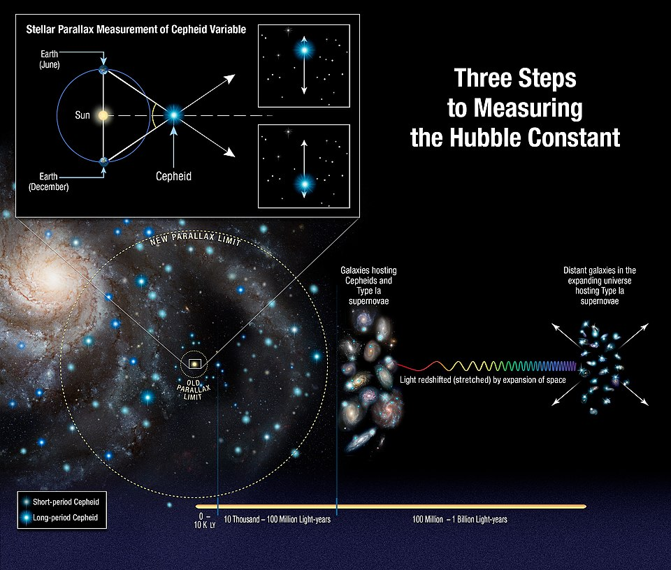
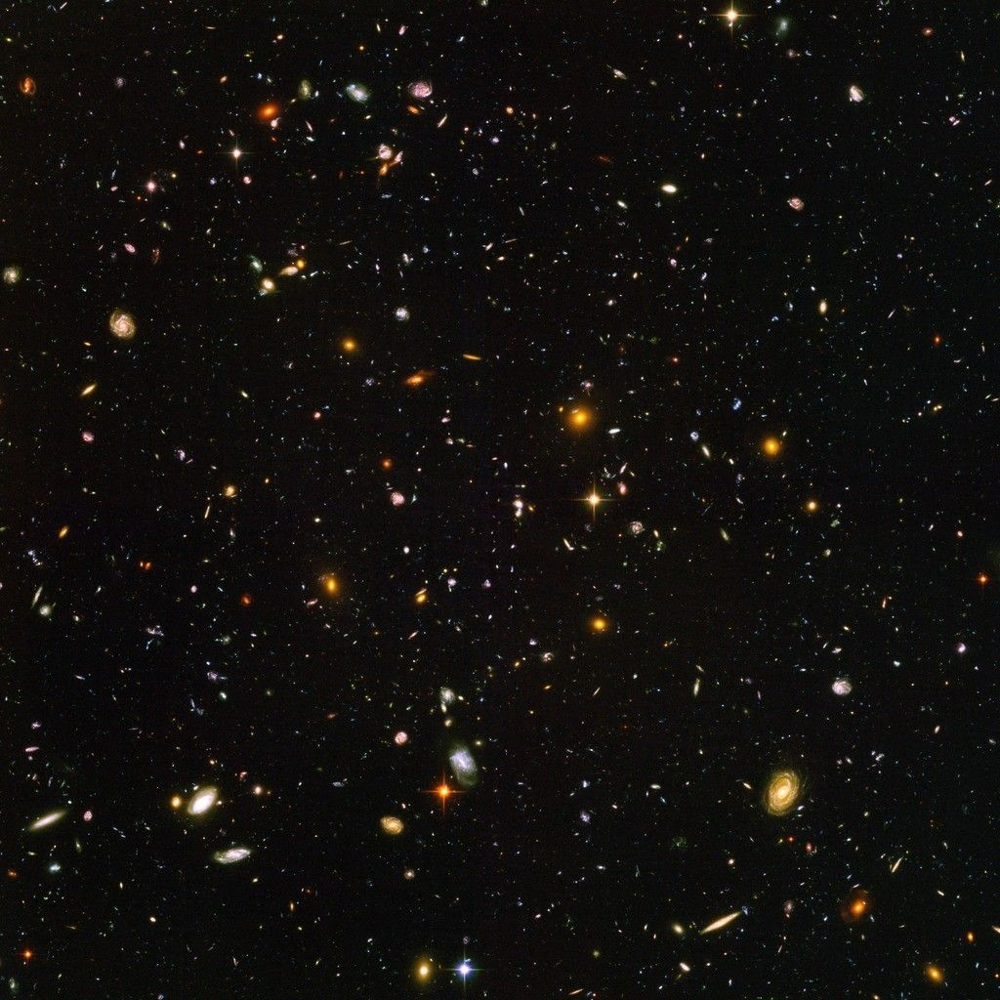
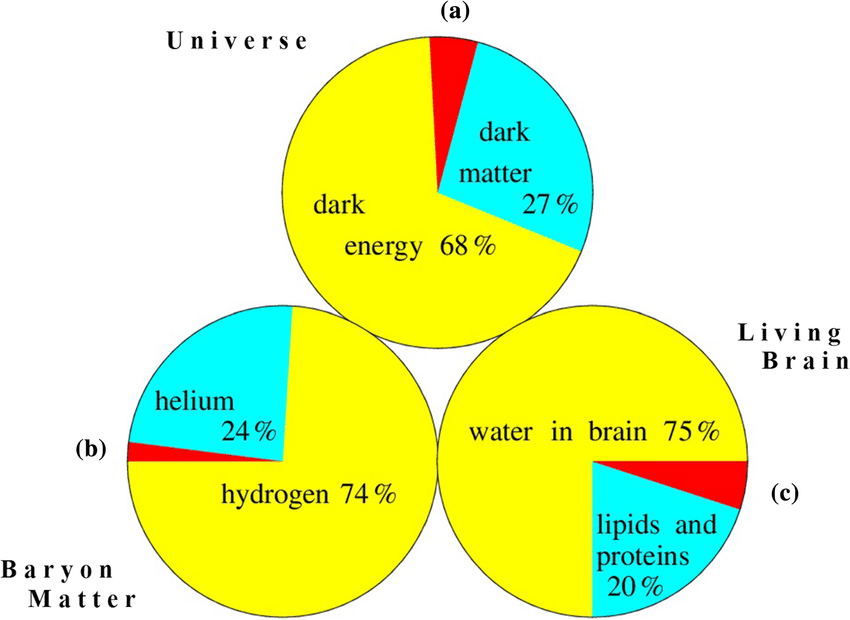
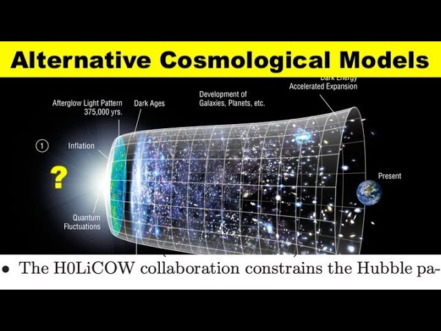
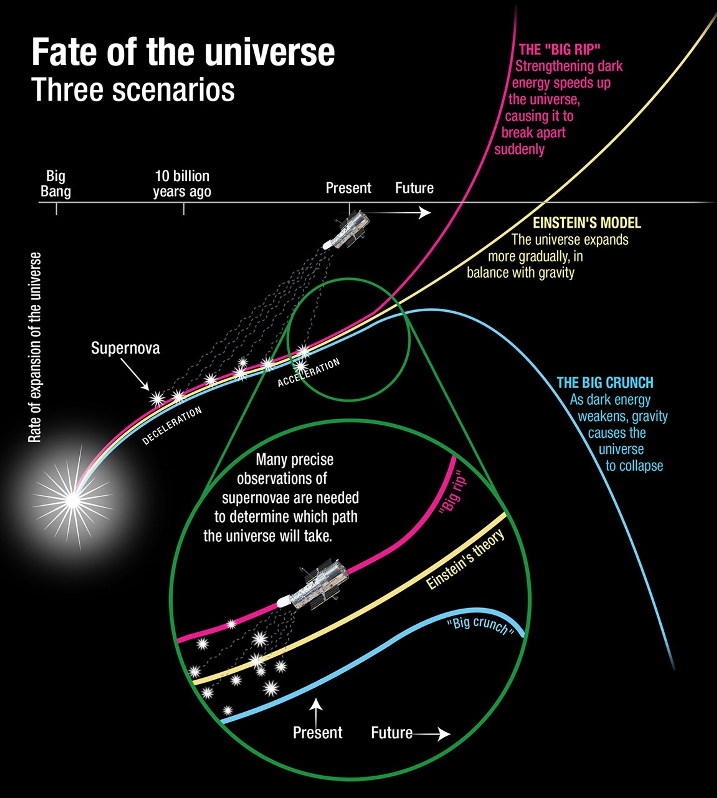
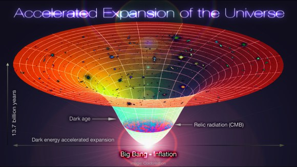
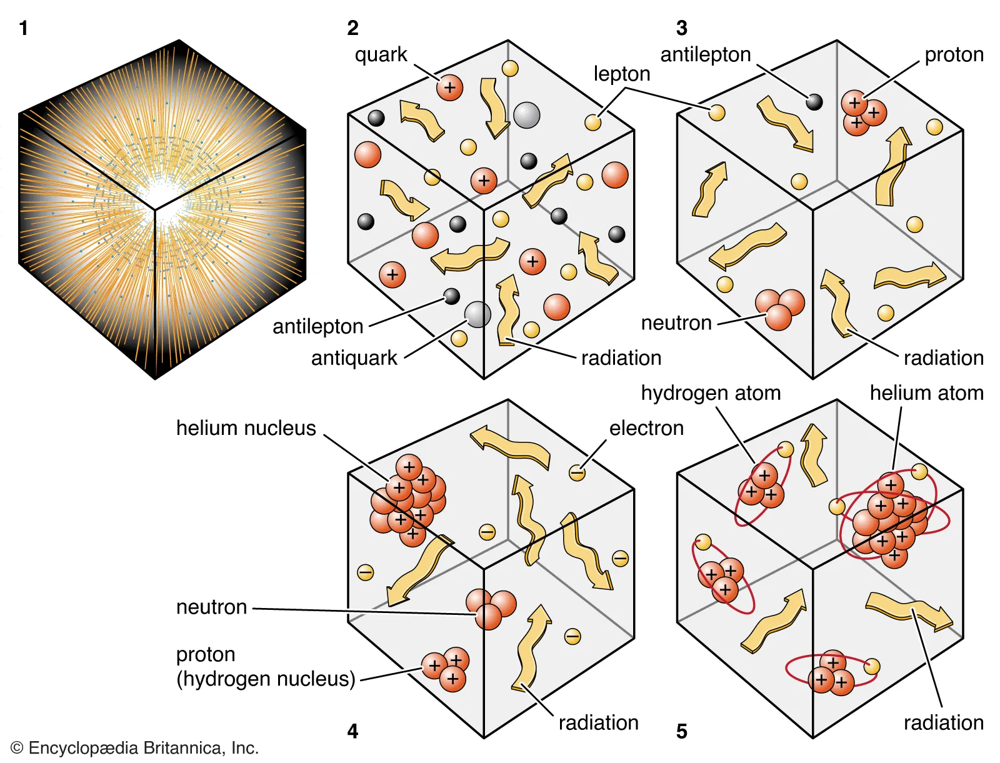

1. Hubble-Lemaître Law and Inferences about the Expansion of the Universe
The observations of Edwin Hubble and Georges Lemaître showed that there is a "redshift" in the spectrum of distant galaxies, which means that these galaxies are moving away from us.
Even more striking is that a galaxy's recession velocity (the amount of redshift) is directly proportional to its distance from us. This relationship is known as the Hubble-Lemaître Law.
The most fundamental inference of this law is that the universe is expanding in every direction and as a whole. This means that space itself is expanding. When we go back in time, we conclude that the universe was in an increasingly hotter and denser state.

2. Galaxy Formation and Large-Scale Cosmic Structures
As the universe expanded, gravity brought matter together to form structures.
The first step was the tiny density fluctuations visible in the Cosmic Microwave Background Radiation (CMB).
Over time, these dense regions grew around a gravitational scaffold primarily formed by dark matter. Visible baryonic matter (gas and dust) then collapsed into these dark matter halos, forming the first stars and galaxies.
Galaxies also came together through gravity to form galaxy clusters and immense superclusters. Today, the universe has a "Cosmic Web" structure where galaxies are distributed along these vast, web-like structures.

3. The Composition of the Universe (Baryonic Matter, Dark Matter, Dark Energy)
One of the most surprising discoveries of modern cosmology is that the matter we know constitutes a very small part of the universe.
Baryonic Matter: It is the ordinary matter made up of particles like protons and neutrons, which form stars, planets, gas clouds, and life. It constitutes only about 5% of the energy-composition of the universe.
Dark Matter: It is a mysterious form of matter that cannot be observed directly because it does not interact with light (electromagnetic radiation), but its existence is proven by the gravitational effects on the rotation speeds of galaxies and the behavior of galaxy clusters. It is thought to constitute about 27% of the universe.
Dark Energy: It is an even more mysterious form of energy discovered to accelerate the expansion of the universe. Although its nature is not fully understood, it is the largest component of the universe and is responsible for about 68% of it.

4. Unsolved Problems and Open-Ended Questions in the Big Bang Theory
Although the Big Bang theory is successful, it does not explain everything. Some fundamental questions remain unanswered:
The Flatness Problem: Why does the universe appear so flat in every direction? (Inflation theory explains this.)
The Horizon Problem: How come regions of the universe that are too far apart to have interacted, even at the speed of light, are at almost the same temperature? (Inflation theory also explains this.)
The Nature of Dark Matter and Dark Energy: What are their fundamental components?
The Singularity: What did the "singularity" of infinite density exactly mean at the very beginning of the Big Bang? This is a point where general relativity and quantum mechanics need to be unified.

5. Overview of Alternative Cosmological Models
Throughout history, alternative models to the Big Bang have been proposed.
Steady State Theory: It accepts that the universe is expanding but proposes that new matter is continuously created to keep the overall density constant. The discovery of the CMB and evidence showing the universe was different in the past invalidated this theory.
Oscillating Universe / Big Crunch: This is the idea that the expansion of the universe would stop at some point and, under the effect of gravity, it would collapse back onto itself (Big Crunch), triggering a new Big Bang. However, since the discovery of dark energy shows that the expansion is accelerating, this scenario no longer seems likely.

6. Possible Scenarios for the Future of the Universe
The ultimate fate of the universe depends on the properties of dark energy and the total energy density of the universe.
Heat Death / Big Freeze: (The most likely scenario) The universe expands forever, accelerating. Stars consume their fuel and go out, galaxies disperse, and the universe cools down towards a homogeneous, lifeless, and energy-less state.
Big Rip: If the repulsive force of dark energy increases over time, at some point it could tear apart galaxies, stars, planets, atoms, and even the fabric of space-time.
Big Crunch: As mentioned above, it is the scenario where the expansion reverses. Current data does not support this.

7. The Main Assumptions of the Big Bang Theory
That the universe had a beginning.
That the universe evolved into its present state by expanding from an infinitely dense and hot state (singularity) in the past.
That all matter and energy in the universe emerged from this initial state.
That the recession of galaxies from each other is a result of the expansion of space itself.

8. Description of the Early Stages of the Universe (Inflation, Primordial Nucleosynthesis)
Cosmic Inflation: In a very tiny fraction of the first second after the Big Bang (after about 10^-36 seconds), the universe expanded at an exponential rate, much faster than the speed of light. This explains the smoothness and homogeneous structure of the universe.
Primordial Nucleosynthesis: After the inflation period, the universe was in a "plasma soup." Around the first three minutes, the temperature and density dropped to a level where protons and neutrons could merge to form the first atomic nuclei (hydrogen, helium, lithium). The predictions of this process are in perfect agreement with the observed elemental abundances.

9. The Main Evidence for the Theory (Cosmic Microwave Background Radiation, Expansion of the Universe)
The Expansion of the Universe: Hubble's observations and redshift evidence.
Cosmic Microwave Background Radiation (CMB): The most important evidence for the Big Bang. When the universe was about 380,000 years old, it cooled down enough for atoms to form, and light (photons) began to travel freely. This first light is observed today as a microwave "afterglow" coming from all over the universe, at a temperature of 2.7 Kelvin (-270.45°C).

10. The Nature and Importance of the Cosmic Microwave Background Radiation
Nature: It is a fossil radiation remnant from the initial fireball of the Big Bang. As the universe expanded, the wavelength of this radiation stretched and its energy decreased, shifting into the microwave region today.
Importance: The fact that the CMB is almost perfectly smooth, yet contains tiny temperature fluctuations (anisotropies), shows the density differences in the early universe. These fluctuations are the seeds of large structures like galaxies and galaxy clusters. Studying the CMB provides precise data about the age, composition, and geometry of the universe.